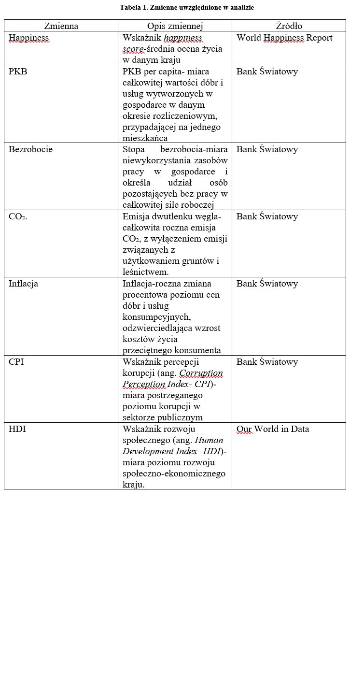
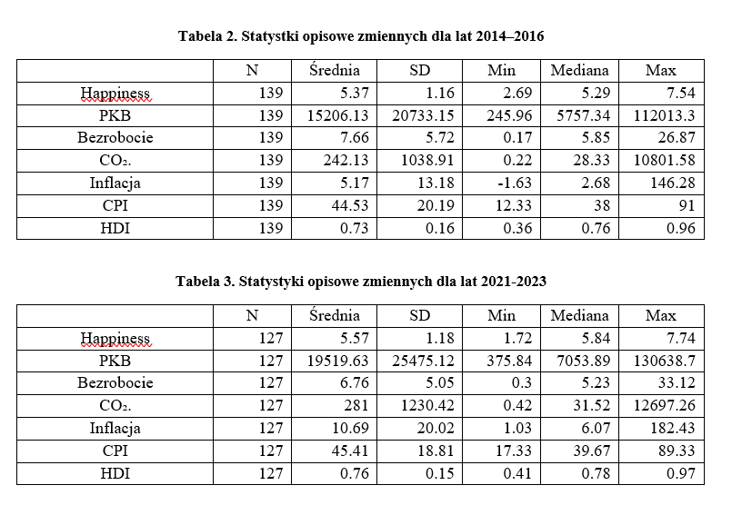
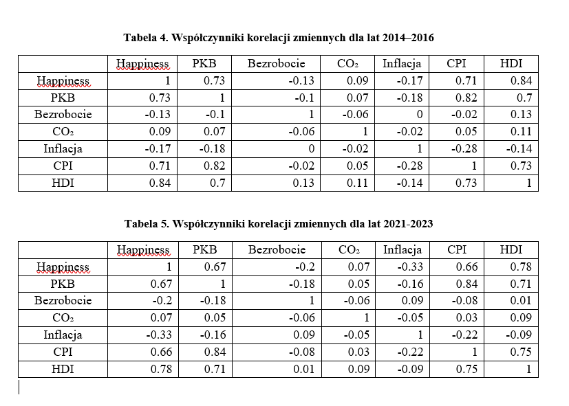
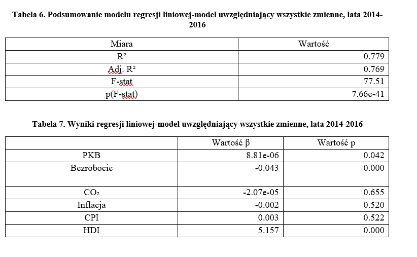
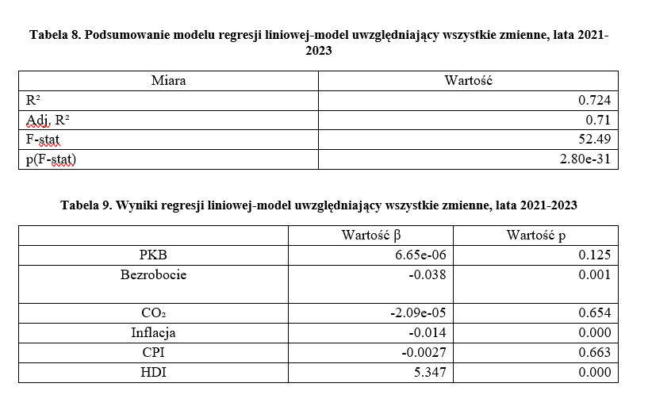

Projekt analityczny wykonany w Pythonie na potrzeby pracy magisterskiej. Celem była analiza zależności między poziomem szczęścia w poszczególnych krajach a wybranymi czynnikami ekonomicznymi i społeczno-gospodarczymi.
Zakres projektu:Projekt został zrealizowany z wykorzystaniem AI jako wsparcia w programowaniu, analizie danych i rozwiązywaniu problemów technicznych.


W latach 2021–2023 średni poziom szczęścia oraz HDI wzrosły w porównaniu z okresem 2014–2016, podczas gdy średnie bezrobocie spadło. Jednocześnie wzrosły średnie wartości PKB per capita i inflacji. Największym zróżnicowaniem między krajami charakteryzowały się PKB per capita, emisje CO₂ oraz inflacja, z widoczną obecnością wartości skrajnych.

W obu analizowanych okresach najsilniejsze dodatnie korelacje z poziomem szczęścia wykazywały HDI, PKB per capita oraz CPI. Bezrobocie i inflacja były ujemnie skorelowane ze szczęściem, przy czym zależność inflacji wyraźnie wzrosła w latach 2021–2023. Emisje CO₂ wykazywały praktycznie brak liniowej zależności ze szczęściem. Zaobserwowano również silne korelacje pomiędzy HDI, PKB per capita i CPI.


Modele regresji wyjaśniały odpowiednio 77,9% zmienności poziomu szczęścia w latach 2014–2016 oraz 72,4% w latach 2021–2023. HDI był najsilniejszym i statystycznie istotnym predyktorem w obu okresach. Bezrobocie miało istotny ujemny związek ze szczęściem w obu modelach, natomiast inflacja stała się istotna statystycznie w drugim okresie. PKB per capita było istotne w pierwszym okresie, ale nie w latach 2021–2023.
Wyniki wskazują na wyraźny związek między poziomem rozwoju społecznego i gospodarczego a poziomem szczęścia. HDI pozostawał najbardziej stabilnym czynnikiem związanym z dobrostanem mieszkańców, podczas gdy znaczenie inflacji wzrosło w okresie 2021–2023. Jednocześnie wyniki pokazują, że zależności między czynnikami ekonomicznymi a szczęściem zmieniają się w czasie i nie wszystkie zmienne wykazują niezależny, statystycznie istotny związek z poziomem szczęścia.